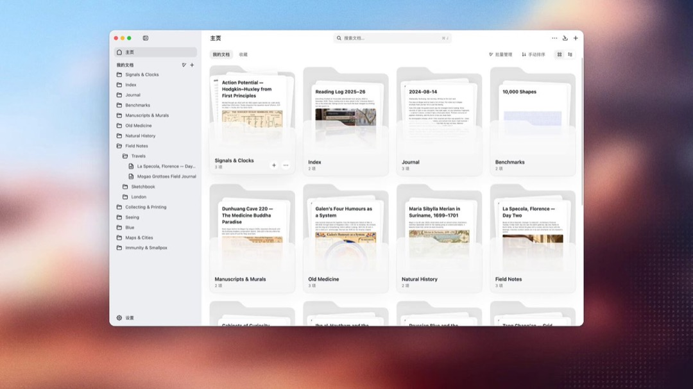
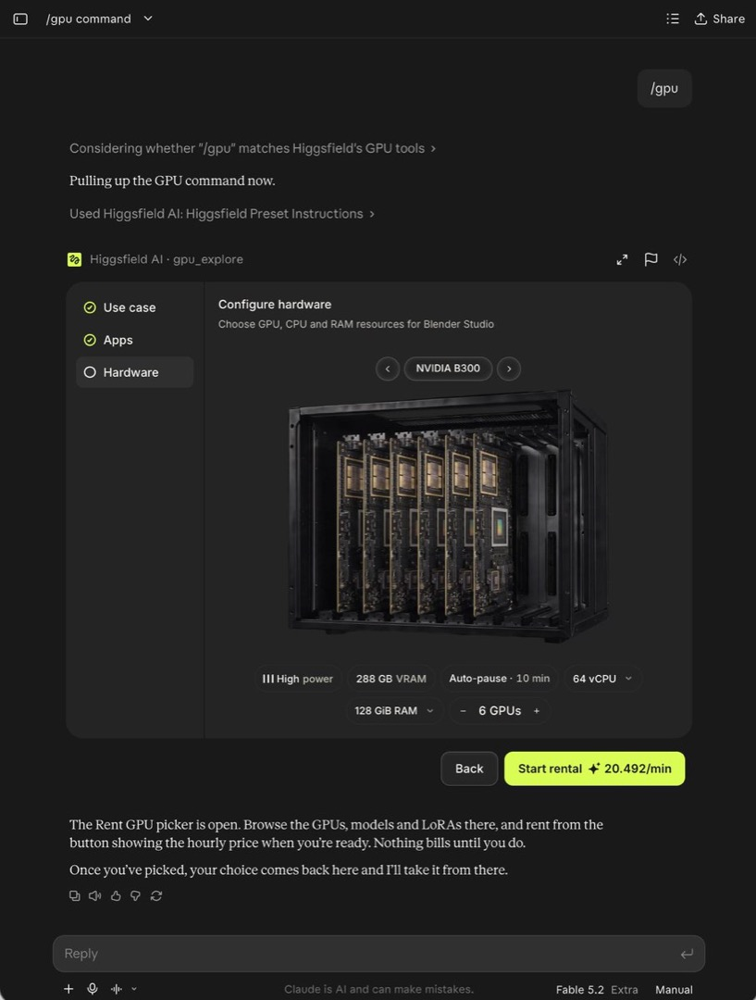
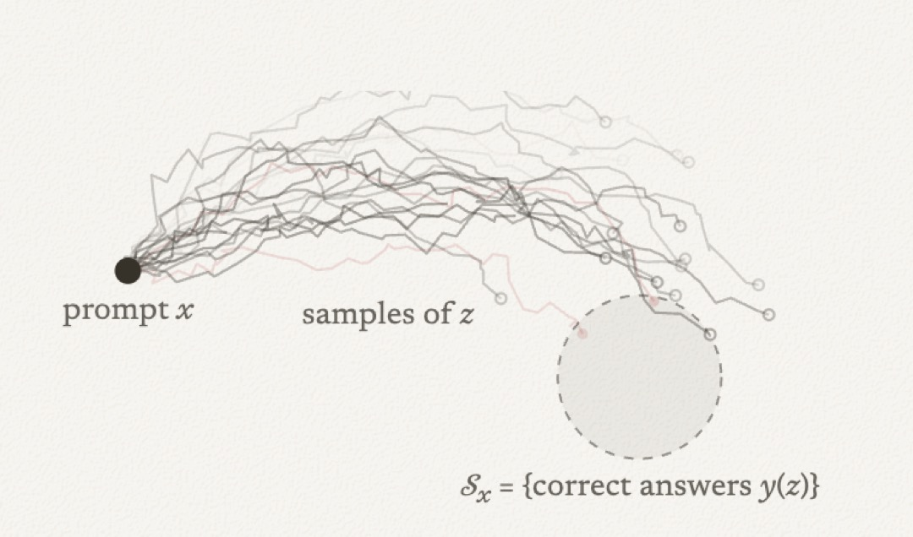
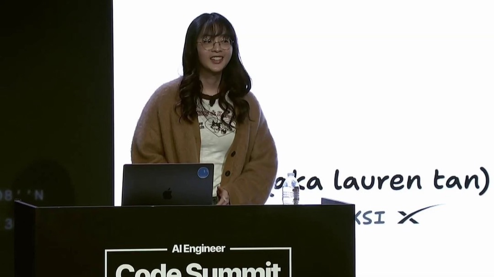
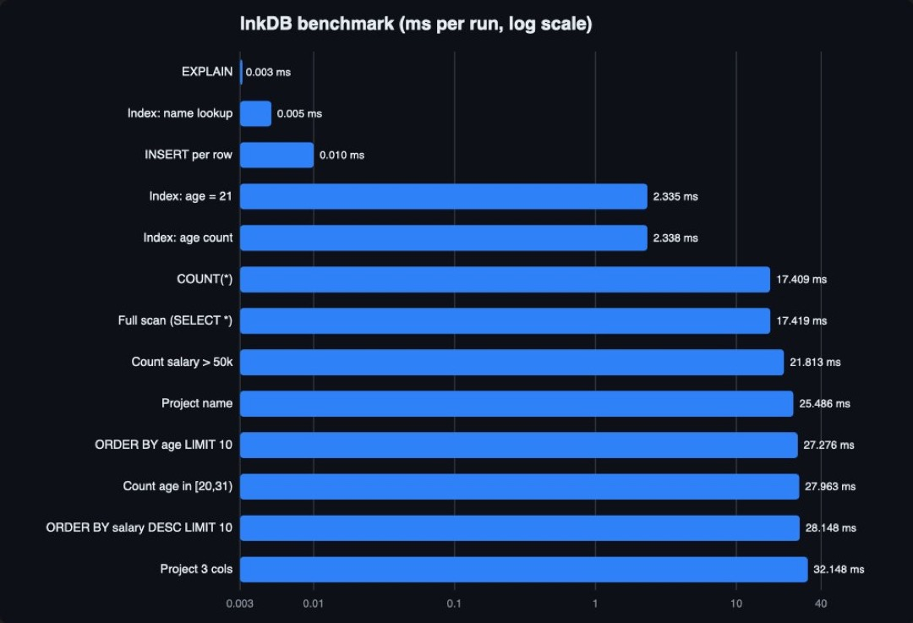

本期速览
01 Quiet.md开源跨平台笔记应用
03 Higgsfield按需GPU租赁
04 WorkBuddy与豆包账单差1.7倍
05 gVisor与Agent基座捐给CNCF
11 Scarlet让Agent剪辑访谈视频
13 Grok工程师四问处理Agent错误
01｜Quiet.md开源跨平台笔记应用
来源（X） · @s1dashu · 2026-11-20 16:59
· 笔记就是你电脑上真实的文件夹和文件
· Rust 原生、GPU 绘制，一篇 100 万字的笔记滚动每帧 4.4 毫秒
· 笔记里的白板，放一万个图形照样跟手：拖一个形状每帧 1.4 毫秒，同样的场景比 Excalidraw 快 12 倍
· 第一次打开就能一键导入 Obsidian 库
GitHub：https://github.com/s1dashu/quiet-md

02｜Kamira截图悬浮预览贴图工具
来源（X） · @appinn · 2026-11-20 20:28
【开发者自荐】Kamira：只管截图的 Mac 小工具，留下悬浮预览和贴图，后台约 20 MB
https://meta.appinn.net/t/topic/96478
03｜Higgsfield按需GPU租赁
来源（X） · @axultan · 2026-11-20 09:39
中文译文
你现在可以通过Higgsfield在Claude中租用GPU了。
创意软件拥有几十年的能力积累，分散在各种工具和复杂界面之中。
前沿智能体将各工具的专业知识整合到同一个上下文中。尚未被探索的空间是这些工具协同工作时所能实现的效果
原文
you can now rent GPUs in Claude through Higgsfield
creative software has decades of capability spread across tools and complex interfaces
frontier agents bring expertise across tools into one context. the unexplored space is what those tools can do together

引用内容
Higgsfield AI 🧩 @higgsfield
中文译文
隆重推出Higgsfield GPU Harness。
在Claude和ChatGPT中按需租用GPU，用于渲染、运行开放权重模型和训练LoRA。
让多个AI智能体同时在云端处理你的专业应用，无需绑定设备。
黑色星期五促销，现已上线：GPU低至3.6折。
原文
Introducing Higgsfield GPU Harness.
Rent on-demand GPUs in Claude and ChatGPT to render, run open-weight models and train LoRAs.
Let several AI agents work on your professional apps in the cloud at once, from any device.
Black Friday deal, live now: get GPUs at up to 64% OFF.
04｜WorkBuddy与豆包账单差1.7倍
来源（X） · @berryxia · 2026-11-20 20:16
我一直挺好奇：同一个模型、同一件活，放在两边跑，账单到底差多少？
手痒之下，我在 11 月 19 日亲自下场实测了一把：在豆包工作和 WorkBuddy 上，拿同一个模型、同一条提示词各跑了两道题（实测录屏放在最下面）。
算完账我发现，同一道题换个平台跑，账单能差出 1.7 倍；但真正能帮你省钱的，其实是给不同的活选对模型档位。
咱们直接拿实测数据来算笔账。
第一个测试场景：用纯代码盖一座天坛祈年殿，两边都选 Kimi K3.1 Pro：
① 豆包工作：扣了 210.46 额度，折合大约 1.60 元，耗时 19 分 36 秒
② WorkBuddy：扣了 151.80 积分，折合大约 2.66 元，耗时 11 分 28 秒
两边都交出了能直接跑的项目，三重檐、汉白玉台基、一键拆解再重组都能用。
WorkBuddy 这边快了 8 分钟左右，细节上也挺用心：多做了全景、檐下、俯瞰三个预设视角，配好了快捷键，交付前还自己开浏览器，把桌面端、手机端和拆解重组都验了一遍。
乍一看有点反常：豆包工作扣掉的数字明明更大，怎么花出去的钱反而更少？
原因其实很简单，两家的「1 积分/额度」压根不是一个价。
按连续包月的标价折算，豆包工作每额度大约是 0.0076 元，WorkBuddy 每积分大约是 0.0175 元。
要是光盯着扣掉的积分数字比价，结果刚好会比反。
第二个测试场景：把 Hacker News 11 月 18 日榜单前 10 条整理成中文简报，这次两边都选 DeepSeek V4.1 Flash：
① 豆包工作：没扣额度，耗时 8 分 17 秒，花费 0 元
② WorkBuddy：扣了 5.34 积分，折合大约 0.09 元，耗时 5 分 13 秒
两边交出来的 10 条简报，跟当天的真实榜单都严丝合缝对得上。这一轮在速度上，WorkBuddy 也快一些。
这道题也顺带说明，DeepSeek V4.1 Flash 干这类轻活很稳，两边都是一次交付。
其实把跑一次任务的成本拆到底，就是三个数乘在一起：实际用掉的量 × 模型倍率 × 每个积分的单价。
最后一个数（积分单价）归平台管，这次两家单价差了 2.3 倍，再加上两边实际消耗的量也不太一样，最后跑出来的账单差了 1.7 倍。
另外还有一个变量：在豆包工作上，低消耗的任务本身就是免费的，不扣额度。第二个测试场景花费 0 元，就是这个原因。
中间那个数，模型倍率，主动权在你自己手里，而且两边都给了不少便宜的选项：
· 豆包工作：DeepSeek V4.1 Flash 和豆包 2.1 Lite 目前限时 0.01 倍，GLM 5.3 Flash 是 0.08 倍。
· WorkBuddy：Hy4 flash 限时免费（0 倍），GLM-5.3-Flash、MiniMax-M3.1-Flash 是 0.08 倍，DeepSeek-V4.1-Flash 还有夜间折扣（0.11 倍）。
往上走到旗舰档，倍率就高了，比如 Kimi K3.1 Pro 在豆包工作上是 0.95 倍。同一个平台里，便宜档和旗舰档差出一截，这在各家都很正常。
所以跑完这一轮，我的判断是：只要便宜档能把活干下来，给任务做好「分档」，省下的钱往往比换平台还多。
那平时到底怎么区分、怎么选？
我自己的标准就一条：这活要是干错了，你花多久能看出来。
① 扫一眼就能验货的活：比如日常查资料、抓榜单、整理表格。这种直接丢给最便宜那档就行，像这次抓 HN 简报，豆包工作上没扣额度，WorkBuddy 上也就 9 分钱。
② 出了错很难排查的活：比如多文件的代码项目、要拿去上会的报告。这种别省，直接上更强的模型，图的就是稳稳当当一次交付。
说白了，用便宜档省下的是真金白银，代价是你得自己多扫一眼结果。
10 条榜单标题，对着原网页扫一遍就知道对不对；可要是几十页的报告里偷偷藏了个错，省下的那点钱，根本抵不过你一行行找错返工的时间。
肯定有人会说：便宜档本来就干不了重活啊。
没错，所以重活本来就不该往下放。「分档」真正的意思，是把那些没必要杀鸡用牛刀的活放下去。
碰到盖祈年殿这种复杂任务，我这次还是用了 Kimi K3.1 Pro。
DeepSeek V4.1 Flash 在轻活上已经很稳了，重活它能做到什么程度，感兴趣的朋友可以拿祈年殿这道题试试，欢迎把结果甩给我。
最后也提醒几句：豆包工作上低消耗的任务本身就免费，再加上 0.01 倍、0 倍这些优惠倍率和两边的加赠额度，轻活的成本可以压得很低；
不过优惠倍率和加赠额度目前都是限时的；我只跑了一轮实测，单次数据难免会有一点波动。
我的建议：高频的轻活，先放豆包工作上跑，低消耗的任务不扣额度，基本不花钱；
WorkBuddy 在部分场景下会有一些速度优势，具体怎么搭配，也看个人的使用习惯。
顺带提一嘴，豆包工作目前新用户能领 30 天体验，签满
30 天还送 8800 额度，正好可以去跑跑看。
实测对比录屏在下面👇
05｜gVisor与Agent基座捐给CNCF
来源（X） · @InfoQ · 2026-11-20 20:14
中文译文
Google向CNCF捐赠Agent Substrate和gVisor，以大规模保障AI智能体的安全 https://bit.ly/3XlUUEB 作者：@RisiCraig #aiops
原文
Google Donates Agent Substrate and gVisor to the CNCF to Secure AI Agents at Scale https://bit.ly/3XlUUEB by @RisiCraig #aiops
06｜北大博士开源NOI竞赛原创题库
来源（X） · @Ryrenz · 2026-11-20 20:09
作者 Zijian Wang 的 GitHub 主页写着：北大图灵班本科、北大前沿计算研究中心博士，2020 年 World Finalist，现在在小马智行。
学竞赛最缺的往往不是题，是出题人的视角：这道题为什么这么设计、正解是怎么想到的。awesome-competitive-olympiad-algorithms 收的是作者自己给 NOI、北京省队选拔和模拟赛出的原创题，每道题配齐三样：题面、C++ 标准解答、带正确性和复杂度分析的题解。
另外还有一批讲义幻灯片，按难度排好了顺序，题目目录也做了无剧透版本。官方测试数据单独打包，Google Drive 和 GitHub Release 都能下，自己写完可以直接对拍。讲义和题解全是中文；代码 MIT，题面和讲义是 CC BY-NC-SA 4.0，不能商用。
跟着出题人的思路刷题，和闷头刷题完全是两种体验。
GitHub：https://github.com/wzj52501/awesome-competitive-olympiad-algorithms
07｜RL训练提升找对路径概率
来源（X） · @bibryam · 2026-11-20 20:07
中文译文
推理到底在解决什么目标？
↳ 强化学习（RL）最大化的是找到通往正确答案的路径的概率，而不一定提升每条路径本身的正确性。
↳ 扩大强化学习规模（更多采样、更长的推理链）会提高成功概率，但由于验证器不完美，也会引入奖励欺骗（reward hacking）风险。
↳ 在推理过程中"思考更久"所带来的可观察到的收益，源于训练期间为寻找成功路径所投入的计算量，而这些计算成本已经被摊销到了模型的权重中。
https://alexwang.ai/posts/reasoning-as-pathfinding/#best-of--sampling
原文
What objective is reasoning solving?
↳ RL maximizes the probability of finding a path to the correct answer, not necessarily improving the correctness of individual paths.
↳ Scaling up RL (more samples, longer chains) increases success probability but also introduces reward hacking risks due to imperfect verifiers.
↳ The observed benefit of 'thinking longer' during inference comes from the compute invested in finding successful paths during training, which is amortized into the model's weights.
https://alexwang.ai/posts/reasoning-as-pathfinding/#best-of--sampling

08｜平头哥芯片训练Qwen旗舰模型
来源（X） · @servasyy_ai · 2026-11-20 20:06
我刚看完吴泳铭在财报会上的官宣，很多人可能还没意识到这事有多牛！
以前大家总担心海外断供会卡住国内大模型的脖子，结果阿里不声不响就把自研算力跑通了😅
我给大家捋一下这次放出来的三个信号：
1、平头哥已经扛起旗舰训练和百炼推理
千问团队现在已经在平头哥芯片上训练下一代旗舰模型，百炼平台也直接用国产芯片对外提供推理服务了。
2、平头哥亮出了第三代 GPU 的量产排期
平头哥今年全面上线真武 M890，2027 年大规模量产 V900，2028 年接着量产 J900。阿里一口气备齐了未来三年的算力家底。
3、自研芯片能帮开发者把 Token 成本继续打下来
阿里把自家芯片和自家模型绑在一起调优，不仅提升了研发效率，还能同时搞定训练、推理和重度 Agent 任务。只要阿里把单位算力成本继续往下压，我们开发者平时调千问 API 跑工作流又能省下一大笔钱😋
别人还在到处抢海外显卡配额，阿里已经带着 Qwen 5.0 杀进自研芯片时代了，平头哥这波真的争了一口气！！！
09｜Meta AI自动取关不回关用户
来源（X） · @WIRED · 2026-11-20 20:04
中文译文
Meta的AI助手可以追踪并自动取消关注那些没有回关你的Instagram用户——有些人正在充分利用这一功能。https://buff.ly/XMv9bdy
原文
Meta’s AI assistant can track and unfollow Instagram users who don’t follow you back—and some people are taking full advantage. https://buff.ly/XMv9bdy
10｜Windows 11通行密钥误报修复
来源（X） · @TheCyberSecHub · 2026-11-20 19:11
中文译文
Windows 11密码密钥bug在成功登录后却报错失败：可选更新修复了25H2和26H2版本的误导性Android错误 www.theregister.com/security/2026/11/20/windows-11-passkey-bug-cries-failure-after-successful-sign-in/5311263
原文
Windows 11 passkey bug cries failure after successful sign-in: Optional update fixes misleading Android error for versions 25H2 and 26H2 www.theregister.com/security/2026/11/20/windows-11-passkey-bug-cries-failure-after-successful-sign-in/5311263
11｜Scarlet让Agent剪辑访谈视频
来源（X） · @GitHub_Daily · 2026-11-20 19:45
Scarlet 是个开源的 AI 剪辑软件，接上 Claude Code 或 Codex，打字或者按住一个键说句话，它就去时间线上动手。
比如说一句「去掉说错重来和重复录的地方，保留每个回答前的停顿」，剪完会在逐字稿里标出删掉的词。
GitHub：https://github.com/Forward-Future/scarlet
它只重新渲染改动的那一小段，删掉的部分和接缝都能单独听，马上知道这刀下得顺不顺。原始素材一直不动，改坏了随时撤回。
导出可以直接出 MP4，想精修的还能导出时间线，接着在达芬奇、Final Cut Pro 或 Premiere 里剪。macOS 和 Windows 都有安装包，Linux 也有预览版。
做播客和访谈的可以把粗剪这一步交给它，自己只管听哪几刀要留，我觉得这个分工挺省力。
12｜松本行弘警告OSS十年内存续危机
来源（X） · @Etype_mag · 2026-11-20 10:38
中文译文
支撑着全球软件开发的OSS。然而，这种文化如今正面临存续危机。
"照这样下去，也许连10年都撑不了。"
发出如此警告的是Ruby之父松本行弘先生。
其背景在于，除了长期存在的人才和资金短缺之外，还有AI的飞速发展。开发越来越便利的同时，OSS本身的存在感却在变得不可见，支撑OSS的人也在减少，这是令人担忧之处。
OSS文化如果消失，工程师将会失去什么？我们向松本先生询问了关于OSS未来的话题。
@yukihiro_matz
https://type.jp/et/feature/32219/
原文
世界中のソフトウエア開発を支えているOSS。しかし、その文化が今、存続の危機に直面している。
「今のままでは、あと10年もたないかもしれない」
そう警鐘を鳴らすのは、Rubyの生みの親・まつもとゆきひろさんです。
背景にあるのは、慢性的な人材・資金不足に加え、AIの急速な進化。開発が便利になる一方で、OSSの存在そのものが見えなくなり、支える人が減っていくという懸念があるとのこと。
OSS文化が失われれば、エンジニアは何を失うのか。まつもとさんに、OSSの未来について聞きました。
@yukihiro_matz
https://type.jp/et/feature/32219/
13｜Grok工程师四问处理Agent错误
来源（X） · @HeLi8866 · 2026-11-20 19:43
这是 Grok Bot 的工程师 Lauren Tan（土豆姐）在台上分享的一句硬核观点。
她每个月能提交 3000 多个拉取请求，而保持这种高效产出的秘诀，就在于她处理 AI 代理犯错时的独特方法。
大多数人遇到代理报错，第一反应就是直接去 AGENTS.md里加一行规则。但 Lauren 不会这么做，她会用 4 个问题来审视每一个错误：
・我能重新设计代码，让这个错误变得不可能发生吗？
・Lint 规则或类型检查能自动捕捉到它吗？
・代理能通过运行并检查自己的工作来捕捉到它吗？
・它真的需要一条书面规则来约束吗？
面对这四个问题，每个错误最终会得到 5 种修复方式之一：
重构设计、增加 Lint、让代理自我验证、写一条规则，或者进行人工审查。这其中最有价值的部分在于：写规则只是一个选项，而不是默认选项。
她的大多数修复根本不会去碰 AGENTS.md。
有时答案是完全禁止使用某些东西，比如 useEffect。
有时是增加 Lint 规则：她的团队在四个月内，把 Lint 规则从 7 条增加到了 167 条。
有时是让代理用截图来证明自己的工作成果。
这套方法论可以总结为一个公式：出现错误 -> 寻找成本最低的永久性修复 -> 确保以后再也不用手动去捕捉它。
Lauren 的所有规则👇：

14｜Agent Skills五款开源技能合集
来源（X） · @GitTrend0x · 2026-11-20 19:30
staryone 的 motlab 代码影棚、globalmpc 的 vibe-bill 账单预言、intincrab 的专利图解说、JL-GUO 的吸星大法、ronyfadel 的 lochness 苹果式翻译……全网玩家把 Agent Skills 玩成了下一代「视频导演 + 云账单会计 + 图解老师 + 武功秘籍 + 本地化专家」:
1️⃣ staryone/motlab（https://github.com/staryone/motlab）
视频即代码：每个场景都是一段画布代码，把 Logo、截图、音乐和一句方向交给 Agent，它写好全部场景、打开预览器；你在画面上框一块、写条批注，它按编号逐条改，最后导出最高 4K 的 MP4；全程不用任何 AI 生图或生视频模型。
“在画面上圈一下，Agent 就去改”！
2️⃣ globalmpc/vibe-bill（https://github.com/globalmpc/vibe-bill）
Claude Code 技能：在项目里打 /vibe-bill，估算你的 vibe coding 应用在 100、1,000、1 万、10 万用户时每月要花多少钱，指出让账单变贵的代码，再给你一张能晒的「小票」；只看环境变量名、不读密钥，也不改你的代码。
“上线之前，先看清账单”！
3️⃣ intincrab/blueprint（https://github.com/intincrab/blueprint）
问 Claude Code 某个东西怎么运作，它画成老式专利图纸一样的动画：零件逐个画出、编号引线标注、东西沿线流动，每一步配一句大白话；28 种零件可用，能嵌进网页，也能导出 GIF、MP4、PNG。
“缓存、事故复盘，一张图纸讲明白”！
4️⃣ JL-GUO/skill-siphon（https://github.com/JL-GUO/skill-siphon）
吸星大法.skill：给它一个学习目标或一个高星 skill，它深读技能源，把高手写在里面的门道、取舍和例外凝练成三份新手能学、能练、能用的学习资料；作者明说它不是安装器，也不许诺速成。
“收藏几百个 skill，不如真吸收一个”！
5️⃣ ronyfadel/lochness（https://github.com/ronyfadel/lochness）
Claude Code 技能 + 命令行：翻译 App 文案前，先查苹果在 macOS 和 iOS 里怎么翻同一句话，让翻译和系统一致；README 举例 “Not Now” 的意大利语，iOS 里 148 处都是 “Non ora”；数据全从你 Mac 本机读取，仓库里不带任何苹果数据。
“翻得像系统原生，而不是像移植版”！
15｜Rust数据库引擎直读SQLite文件
来源（X） · @QingQ77 · 2026-11-20 19:30
https://github.com/hamzader1/inkdb
